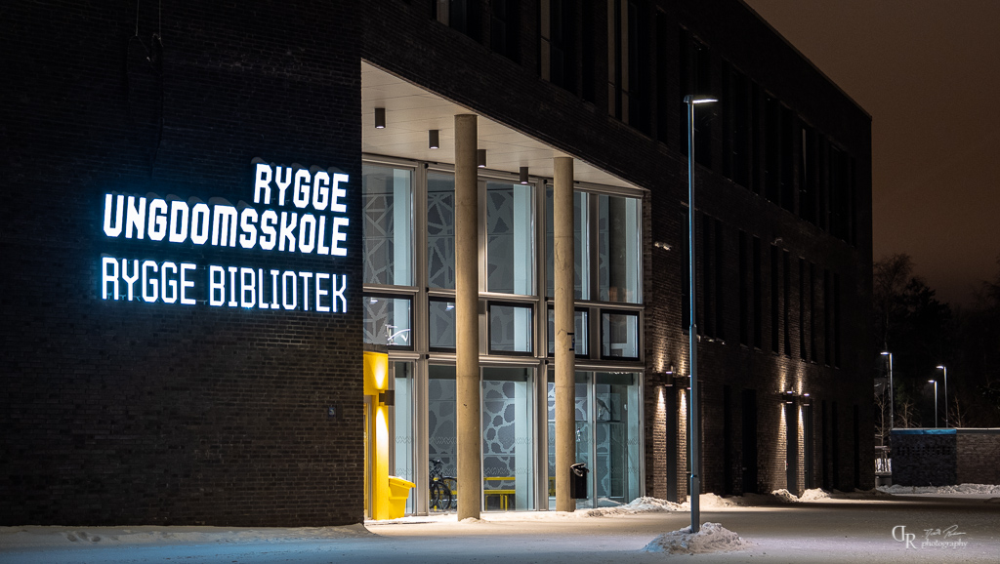

Litt om Rygge Undomskole
Ordet RAUSE skal uttrykke hva vi som skole holder oppe som våre verdier. Vi vil ha Respektfulle, Aktive, Utforskende, Skapende og Engasjerte elever og ansatte her på Rygge ungdomsskole. Skolen har en helsefremmende profil og har hovedfokus på et inkluderende læringsmiljø. I tillegg er skolen Miljøfyrtårn. Hver tirsdag har elevene midttime. Her kan elevene selv velge aktivitet. De kan velge å være i gymsalen, aktiviteter ute, på kunst og håndverksavdelingen, på bandrommet, de kan gjøre lekser, spille sjakk, være på biblioteket, være på te-rommet, eller andre ting som det tas initiativ til gjennom året. Skolen er bygget med aula, auditorier og interaktive tavler i alle klasserom. Rygge ungdomsskole utmerker seg med flotte lokaliteter for praktiske fag. Skolen er samlokalisert med et meråpent kombinert skole- og folkebibliotek, kulturskolen, ungdomshelsetjenesten og har egen kantine og flerbrukshall.
Historie
Rygge Ungdomsskole sto ferdig høsten 2016 og har samlet alle elever i ungdomsskolealder i tidligere Rygge kommune. Skolen har 577 elever pr august 2019, 85 ansatte og har fokus på motivasjon for læring, mestring og muligheter for alle.